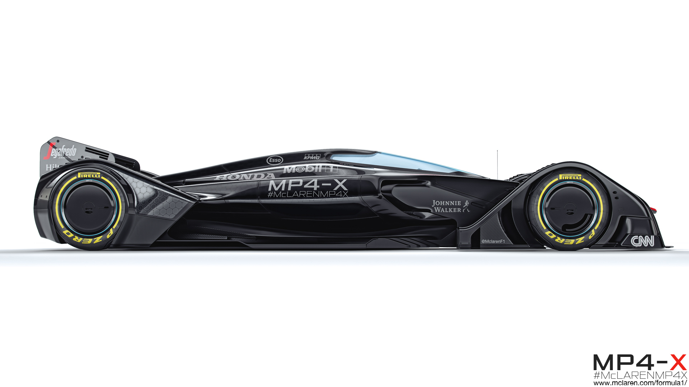
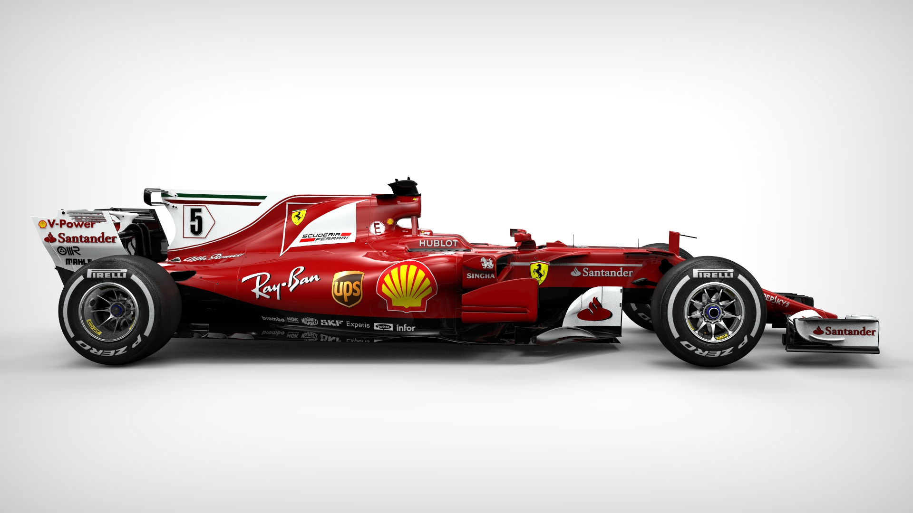
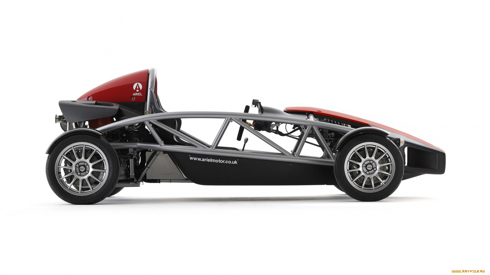

McLaren MP4-X

MP4-X dirancang untuk memanfaatkan sumber daya alternatif; sasis berubah bentuk untuk beradaptasi dengan tuntutan
aerodinamika yang berbeda; dan dapat berkomunikasi jika terjadi kegagalan atau masalah.
Sayangnya, sampai saat ini MP4-X bukan mobil balap perusahaan , tetapi visi konseptual untuk masa depan Formula Satu. Saya
katakan sayangnya hanya karena kita tidak akan melihatnya di trek balap dalam waktu dekat; jika tidak, mobil konsep ini
sama keren dan futuristiknya dengan yang mereka dapatkan. Bukan hanya karena kelihatannya datang dari masa depan, tetapi
karena itu mengemas sejumlah besar teknologi yang kemungkinan akan menjadi norma dalam beberapa tahun.
Ferrari F14-T

Ferrari F14 T (juga dikenal dengan nama internalnya, Project Code 665) adalah mobil balap Formula Satu yang
digunakan oleh Ferrari untuk bersaing di musim Formula Satu 2014. Itu didorong oleh mantan Juara Dunia Pembalap Fernando
Alonso dan Kimi Räikkönen, yang kembali ke tim setelah absen lima tahun. F14 T dirancang untuk menggunakan mesin
1.600 V6 turbocharged baru Ferrari, menggantikan V8 2,4 liter dari F138. Nama mobil itu dipilih oleh penggemar
dalam polling yang diselenggarakan oleh Ferrari. "14" mewakili tahun kompetisi, dan "T" mencerminkan pergeseran seri ke
formula mesin turbocharged.
F14 T adalah mobil Formula Satu bertenaga turbo pertama untuk Ferrari sejak Gustav Brunner merancang F1 / 87 / 88C yang
dikemudikan oleh Michele Alboreto dan Gerhard Berger pada tahun 1988. Bahkan dengan jajaran Alonso dan Räikkönen, mobil
itu tidak berhasil, hanya mencetak skor dua kali naik podium (keduanya oleh Alonso) di sepanjang musim. Itu juga
merupakan mesin Ferrari pertama sejak Ferrari F93A, dari tahun 1993, yang gagal mencetak setidaknya satu kemenangan
Grand Prix. Banyak perubahan teknis yang dibuat, dengan sistem KERS dan ERS bekerja dengan mesin 1,6 liter V6
turbocharged, gearbox 8-speed dan sistem DRS yang lebih kuat.
Ariel Atom-V8

Ariel Atom adalah mobil sport berperforma tinggi resmi yang dibuat oleh Ariel Motor Company yang berbasis di Crewkerne,
Somerset, Inggris, dan di bawah lisensi di Amerika Utara oleh TMI Autotech, Inc. di Virginia International Raceway di
Alton, Virginia.
Ada delapan generasi Ariel Atom hingga saat ini: Ariel Atom, Ariel Atom 2, Ariel Atom 3 (termasuk Mugel Ariel Atom 3
Edisi Terbatas dan Honda Racing Edition - yang hanya dibuat satu) Ariel Atom 3.5, Ariel Atom 3S, Ariel Spec: Race Atom,
Ariel Atom 500 V8 Edisi Terbatas (hanya 25 yang dibuat), dan Ariel Atom 4. Produksi terbatas Ariel Atom 500 V8
menampilkan mesin V8 373 kW (500 bhp; 507 PS) V8. Semua baru Ariel Atom 4 adalah Atom terbaru yang menampilkan mesin
2.0l turbocharged baru yang digunakan di Honda Civic Type R dengan dorongan 3-tahap.
Farm House Lembang

Lokasi
Berada di jalur utama Bandung-Lembang, Farm House menjadi objek wisata yang tidak pernah sepi pengunjung.
Kondisi
Selain karena letaknya strategis, kawasan ini juga menghadirkan nuansa wisata khas Eropa. Semua itu diterapkan dalam bentuk spot swafoto Instagramable.
Observatorium Bosscha

Memiliki beberapa teleskop, antara lain, Refraktor Ganda Zeiss, Schmidt Bimasakti, Refraktor Bamberg, Cassegrain GOTO, dan Teleskop Surya.
Refraktor Ganda Zeiss adalah jenis teleskop terbesar untuk meneropong bintang. Benda ini diletakkan pada atap kubah sehingga saat teropong digunakan,
atap tersebut harus dibuka. Observatorium Bosscha boleh dikunjungi oleh siapa pun, tanpa tiket.
Namun, bagi yang ingin menggunakan teleskop Zeiss, wajib mendaftarkan diri. Untuk instansi atau lembaga pendidikan, diberikan jadwal hari Selasa sampai Jumat.
Sementara itu, kunjungan individu dibuka setiap hari Sabtu.
Riwayat Perhitungan
| Angka Pertama |
Operator |
Angka Kedua |
Hasil |